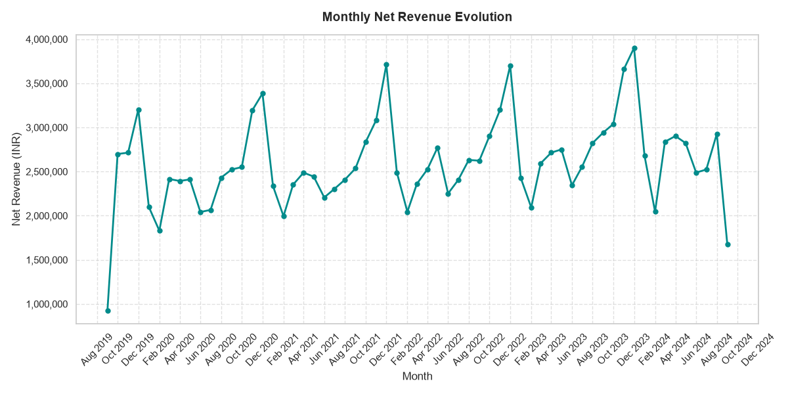
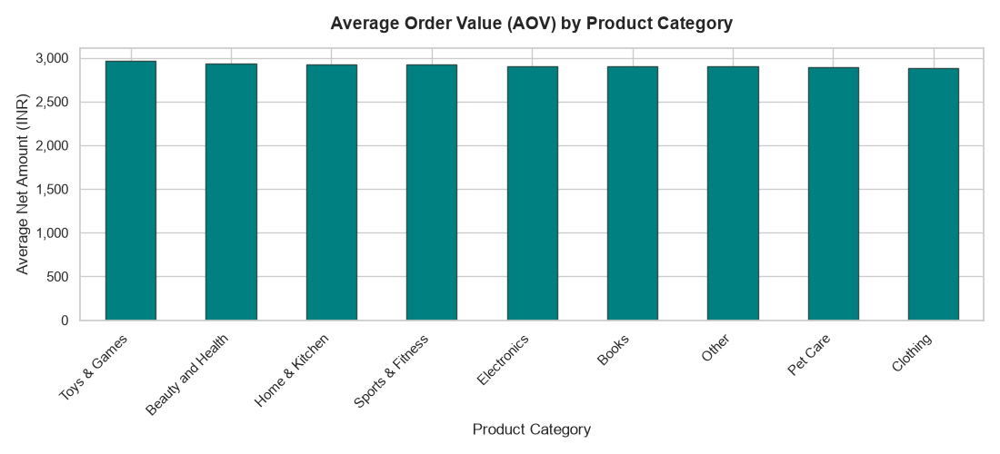
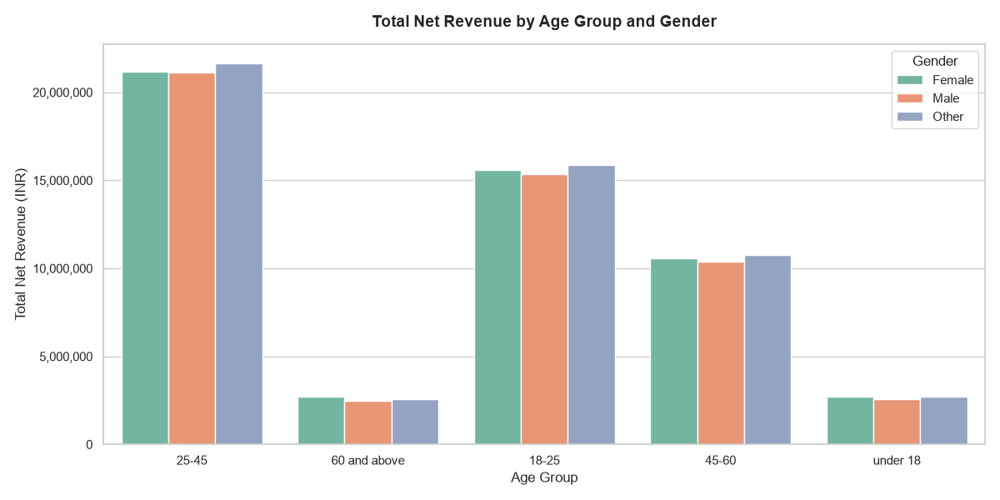
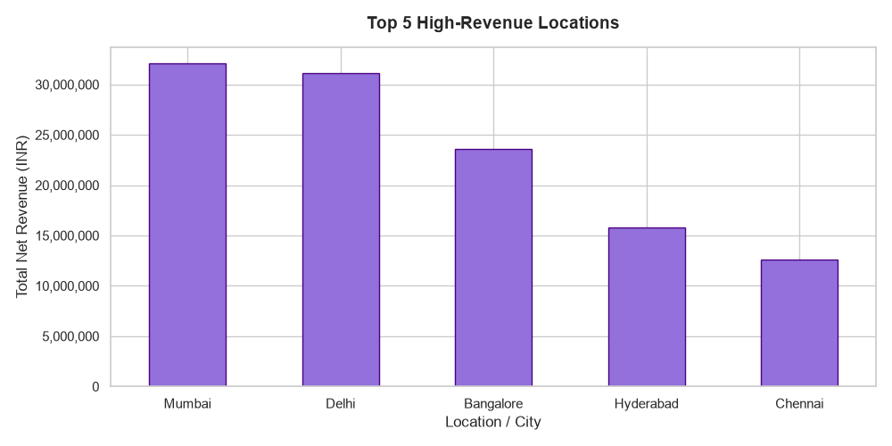
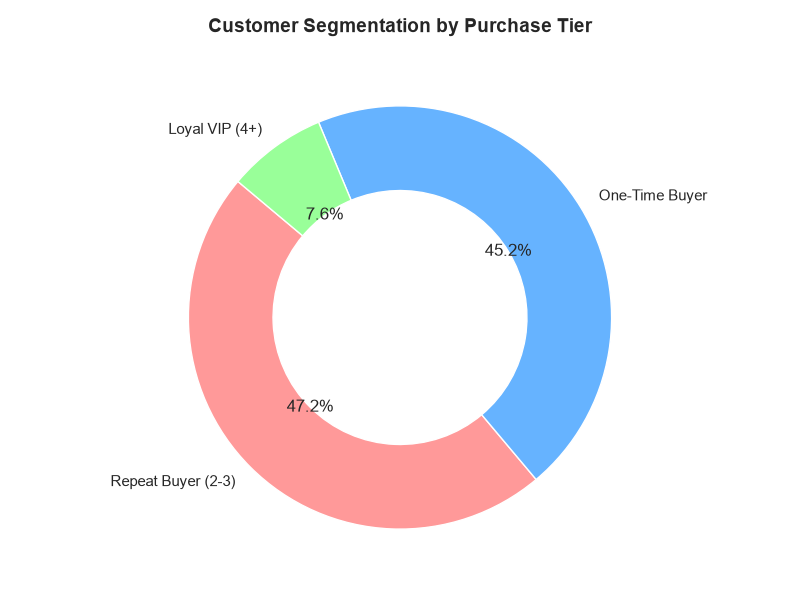
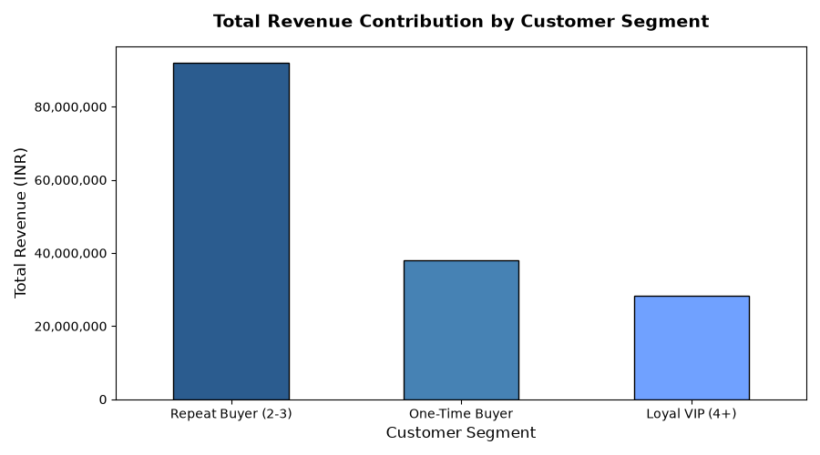
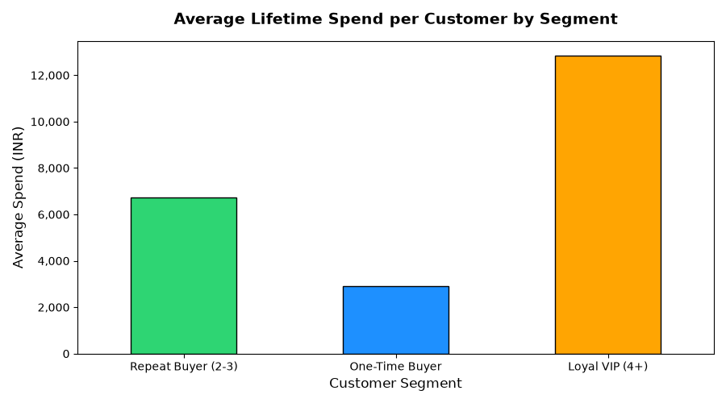
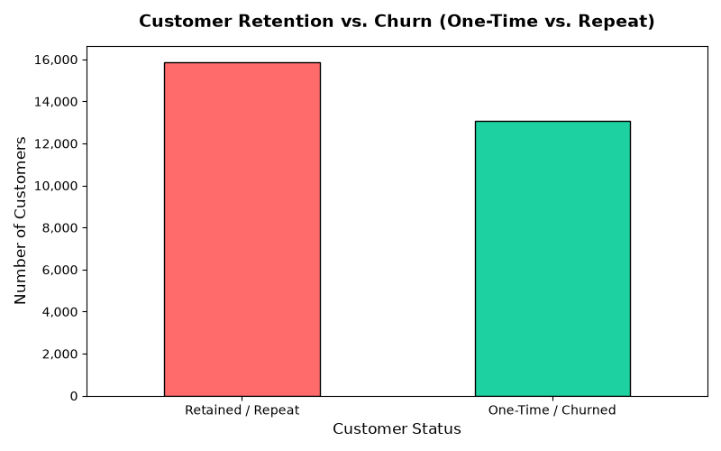
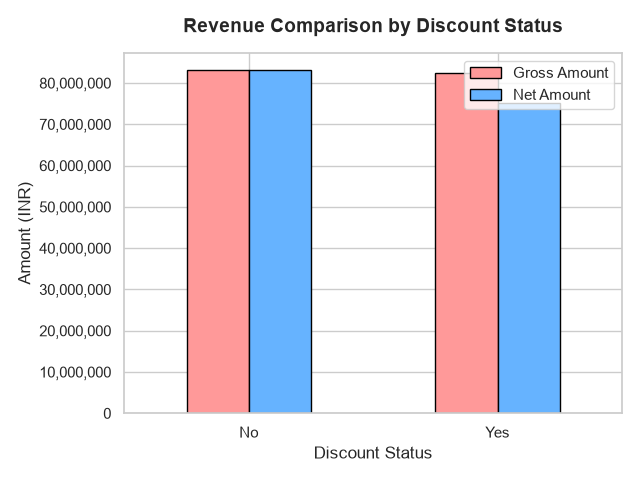

左侧导航 + 滚动联动的单页流程说明书
本页按仓库真实代码与清洗后 CSV 复盘，不照搬 README 里个别不严谨表述。 原始 55,000 笔订单经剔除净额为负后得到 54,387 笔；净收入约 1.582 亿 INR，客单价约 2,910 INR。 README 把 Gross Amount 写成 Gross Profit、把 25–45 写成 25–48、把 Srinagar 等写成高 AOV 城市，与数据不符，流程页以数据为准。
1. 原始数据
文件 1_Data/1_raw/project1_df.csv，55,000 行 × 13 列。一笔订单一行，主键 TID 无重复。金额字段为印度卢比 INR，不是美元。
字段字典
| 字段 | 含义 |
|---|---|
| CID / TID | 客户 ID / 交易 ID |
| Gender, Age Group | 性别、年龄段 |
| Purchase Date | 下单时间（原始为日/月/年） |
| Product Category | 品类，共 9 类 |
| Discount Availed / Name / Amount | 是否用券、券名、折扣额 |
| Gross / Net Amount | 折前额 / 实付净额 |
| Purchase Method, Location | 支付方式、城市（14 个） |
原始样例（前两行）
CID=943146 TID=5876328741 Female 25-45 Electronics FESTIVE50 Discount=64.30 Gross=725.30 Net=661.00 Credit Card Ahmedabad CID=180079 TID=1018503182 Male 25-45 Electronics SEASONALOFFER21 Discount=175.19 Gross=4638.99 Net=4463.80 Credit Card Bangalore
2. 质量审计与清洗
笔记本 3_notebook/01_data_quality.ipynb 与 SQL 5_SQL Business Analysi/01_data_quality.sql 做同一件事：先审计，再产出 1_Data/2_processed/ecommerce_cleaned.csv。
实际检查结果（对原始表）
| 检查项 | 结果 |
|---|---|
| TID 重复 | 0 |
| 关键字段缺失 | 仅 Discount Name 缺失 27,585（未用券） |
| Net Amount < 0 | 613 行，清洗时删除 |
| 财务勾稽 Gross − Discount ≈ Net | 脚本用 0.01 容差核对 |
- 去掉净额为负的 613 行：55,000 → 54,387。
- 空折扣名填
No Discount。 - 解析日期，派生 Year / Month / Month Name / Day of Week。
- 写出清洗表（仓库里已是
2_processed，笔记本注释仍写旧路径1_processed）。
对应 SQL 审计（节选）
SELECT COUNT(*) AS Total_Rows FROM ecommerce; SELECT SUM(CASE WHEN CID IS NULL THEN 1 ELSE 0 END) AS Missing_CID, SUM(CASE WHEN TID IS NULL THEN 1 ELSE 0 END) AS Missing_TID, SUM(CASE WHEN "Net Amount" IS NULL THEN 1 ELSE 0 END) AS Missing_Net FROM ecommerce; SELECT TID, COUNT(*) AS Duplicate_Count FROM ecommerce GROUP BY TID HAVING COUNT(*) > 1; SELECT COUNT(*) AS Invalid_Net_Amount_Rows FROM ecommerce WHERE "Net Amount" <= 0;
3. 探索性分析 EDA
02_eda.ipynb 在清洗表上做分组聚合，并把图存进 4_images/。电子+服装合计约占净收入 49.8%，接近 README 所说的「超过 50%」。




品类净收入结构（清洗后）
| 品类 | 订单 | 净收入占比 |
|---|---|---|
| Electronics | 16,362 | 30.0% |
| Clothing | 10,833 | 19.7% |
| Beauty and Health | 8,255 | 15.3% |
| Sports & Fitness | 5,514 | 10.2% |
| Home & Kitchen | 5,429 | 10.1% |
| 其余四类合计 | 7,994 | 14.7% |
4. 客户分层与流失
03_customer_analysis.ipynb 按 CID 聚合订单次数：1 次=一次性，2–3 次=复购，4 次及以上=VIP。流失在本项目里被定义为「只买过一次」，不是真正的时间窗流失。




5. SQL 业务问数
05_sql_analysis.ipynb 把清洗 CSV 灌进 SQLite 内存库表 ecommerce，再按分号拆开执行 01–04 四个 SQL 文件。这是「同一套指标，Python 与 SQL 对照」。
02 经营概览
-- 总订单、毛额、折扣、净额、AOV
SELECT COUNT(TID),
ROUND(SUM("Gross Amount"),2),
ROUND(SUM("Discount Amount (INR)"),2),
ROUND(SUM("Net Amount"),2),
ROUND(AVG("Net Amount"),2)
FROM ecommerce;
-- 品类收入份额
SELECT "Product Category",
COUNT(TID) AS orders,
ROUND(SUM("Net Amount")*100.0
/ (SELECT SUM("Net Amount") FROM ecommerce), 2) AS share
FROM ecommerce
GROUP BY "Product Category"
ORDER BY SUM("Net Amount") DESC;
03 / 04 客户与折扣
WITH CustomerOrders AS (
SELECT CID, COUNT(TID) AS Order_Count,
SUM("Net Amount") AS Lifetime_Spend
FROM ecommerce GROUP BY CID
)
SELECT CASE WHEN Order_Count = 1
THEN 'One-Time / Churned'
ELSE 'Retained / Repeat' END AS status,
COUNT(*) , ROUND(AVG(Lifetime_Spend),2)
FROM CustomerOrders
GROUP BY 1;
-- 折扣：Yes 26,802 单，净 AOV 2,803
-- No 27,585 单，净 AOV 3,013
-- 信用卡折扣额最高（约 294 万）

支付结构：信用卡 21,871 单、借记卡 13,641 单，两者折扣绝对额也最高。UPI（PhonePe / Paytm / GPay）体量接近，适合做渠道对比，而不是只写「UPI 最大」。
6. Power BI 看板
交付物 6_power_bi_dashboard/ecom sales dahboard.pbix（文件名有拼写误差）。仓库不包含报表截图源文件以外的导出页；本地需用 Power BI Desktop 打开，数据源应对清洗后 CSV。
建议对照的看板页（与笔记本问题对齐）
- 执行层：订单数、净收入、AOV、折扣率。
- 品类与时间：电子/服装占比、月趋势。
- 客群：年龄 25–45、一次性 vs 复购。
- 支付与折扣：信用卡折扣侵蚀。
- 城市：按订单量看一线城，不要把小样本城市当高 AOV 故事。
7. 洞察、建议，以及和 README 的差异
业务文字在 7_businiess_insights/business_insights.md。下面把「仓库叙事」和「我按清洗表重算」分开，方便面试时讲清楚你读过数据。
站得住的结论
- 电子 + 服装接近一半净收入，是捆绑销售主场。
- 18–45 岁贡献约七成净收入；核心档是 25–45。
- 约一半订单用券；用券后净 AOV 更低（2,803 vs 3,013），要控信用卡大额券。
- 复购客贡献收入远高于人数占比，值得做第 2 单激励。
需要改口的 README 点
Srinagar / Dehradun / Varanasi 订单分别约 547 / 549 / 601，AOV 处于中下游，不是高客单扩张样本。
整条流水线一句话
原始交易 CSV → Pandas 审计并丢掉负净额 → 日期与折扣名补全 → 分组 EDA 出图 → 同一张表进 SQLite 用 SQL 复算 KPI / 分层 / 折扣 → Power BI 给业务看 → Markdown 写建议。工具栈见 requirment.txt：pandas、matplotlib、seaborn、SQLAlchemy、Jupyter。